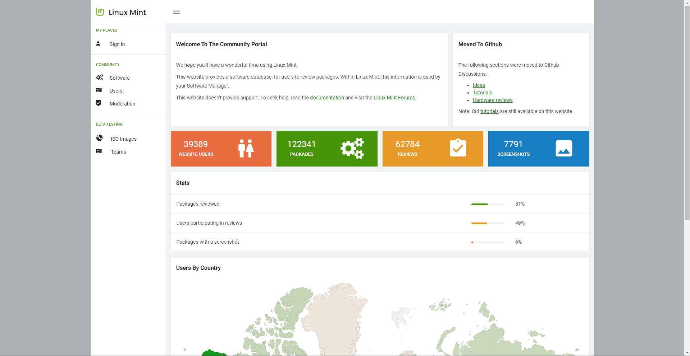

A comunidade Linux Mint é muito ativa e prestativa. Se você tiver dúvidas ou problemas relacionados ao Mint, você pode conseguir ajuda de outros usuários que estejam online.
Para poder acessar a comunidade do Linux Mint é bem simples. Basta entrar no site da Comunidade, e se registrar para interagir com as pessoas que irão lhe ajudar.
No Linux Mint, simplesmente abra o “HexChat” a partir do menu. Se estiver usando Linux Mint com KDE abra o “Konversation”. Isto pode ser feito de forma simples e direta, bastando carregar o aplicativo HexChat a partir do menu. Se você estiver usando outro sistema operacional ou outro cliente IRC, certifique-se de se conectar ao servidor irc.spotchat.org, e de juntar-se aos canais #linuxmint-help e #linuxmint-chat.
O Linux Mint usa os repositórios do Ubuntu (você terá mais informações sobre o que isso significa, adiante) e é totalmente compatível com ele. Desta forma, a maior parte dos recursos, artigos, tutoriais e programas feitos para o Ubuntu também funcionam para o Linux Mint. Se você não conseguir encontrar ajuda sobre um assunto específico, tente pesquisar sobre o mesmo assunto para o Ubuntu.
Documento utilizado: Guia Oficial do Usuário